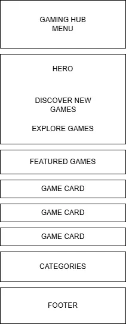
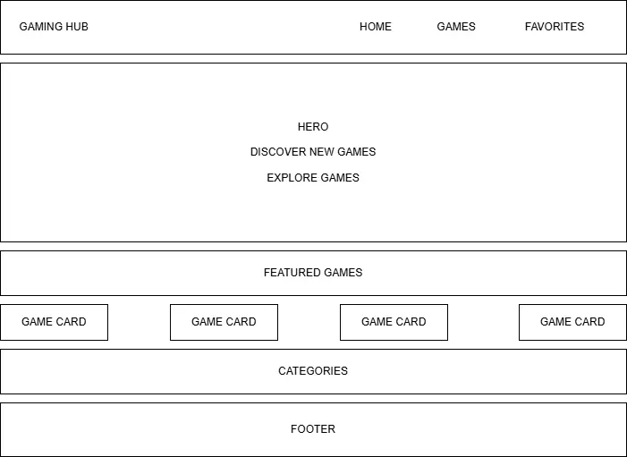

Site Name
Gaming Hub
Gaming Hub is a simple and recognizable name that represents a central place where users can discover video games, view game information, and save their favorite games.
Optional domain: gaminghub.com
Site Purpose
Gaming Hub is an informational website designed to help users discover and explore video games. The site will provide information about games such as title, genre, platform, rating, release year, and images. Users will also be able to browse a game catalog and save their favorite games for later viewing.
Scenarios
- What games are available for my preferred gaming platform?
- What are the highest-rated games available in Gaming Hub?
- How can I save games that I am interested in playing later?
Color Scheme
#111827 - Primary Dark Navy
Used for the header, footer, navigation, and major headings.
#2563EB - Secondary Blue
Used for buttons, links, active navigation items, and accents.
#F8FAFC - Background
Used as the main page background.
Typography
Orbitron
Orbitron will be used for headings and the website name.
Roboto will be used for paragraphs, navigation, buttons, forms, and general website content.
Wireframes
Mobile View

Desktop View
